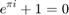

function [mS,vs,model,nfreea,nfreeb,nfreeall, nResB, nResC1] = GetResMatricesLR_svec_var(mB_Res, mC1_Res, mC1)
% /* % ** Purpose: Computes approtiate restrictions matrices in the % ** presence of long run restrictions % ** % ** Input: mB_Res: K x K matrix of user specified restrictions for contemp. impact matrix % ** -1e12 - unrestricted, 0 - restricted to 0; % ** % ** mC1_Res: K x K matrix of user specified restrictions for long run impact matrix % ** -1e12 - unrestricted, 0 - restricted to 0; % ** % ** mC1: K x K, long run impact matrix % ** % ** % ** Output: mS: 2*K^2 x nfreepar, restriction matrix in explicit form % ** % ** vs: K^2 x 1, vector of normalizing constants % ** % ** model: is always 3: C-model % ** % ** nfreea: # of free parameters in A, is always 0 because we estimate a C model % ** % ** nfreeb: # of parameters in \gamma_B, because of long run restrictions this does not % ** correspond to # of par. in B. % ** % ** nfreeall: nfreea+nfreeb % ** % ** nResB: # of contemp. restrictions % ** % ** nResC1 # of long run restrictions % ** % */ K = size(mB_Res,1); mRo = eye(K^2); vSel = vec(mB_Res) ~= 0; mR_B = mRo(find(vSel==0),:); mRo = eye(K^2); vSel = vec(mC1_Res) ~= 0; mR_C1 = mRo(find(vSel==0),:);
Not enough input arguments. Error in GetResMatricesLR_svec_var (line 33) K = size(mB_Res,1);
- _ | $SECTION TITLE
- ITEM1
PREFORMATTED
for x = 1:10

disp(x) end
TEXT
- ITEM2
DESCRIPTIVE TEXT$ | _ *
if isempty(mR_C1); mR_C1 = []; end mR_C1 = mR_C1*kron(eye(K),mC1); if isempty(mR_B) == 0 mR = [mR_C1;mR_B]; else mR = mR_C1; end mSb = null(mR); % if scalerr(mSb) == 1; % errorlog("Cannot compute restrictions in explicit form!\nUse different restrictions..."); % retp(-10,-10,-10,-10,-10,-10,-10,-10); % end; mS = [zeros(K^2,size(mSb,2));mSb]; nfreeb = size(mSb,2); vs = [vec(eye(K));zeros(K^2,1)]; model = 3; nfreea = 0; nfreeall = nfreea+nfreeb; if isempty(mR_C1) == 0 nResC1 = rank(mR_C1); else nResC1 = 0; end if isempty(mR_B) == 0; nResB = rank(mR_B); else nResB = 0; end